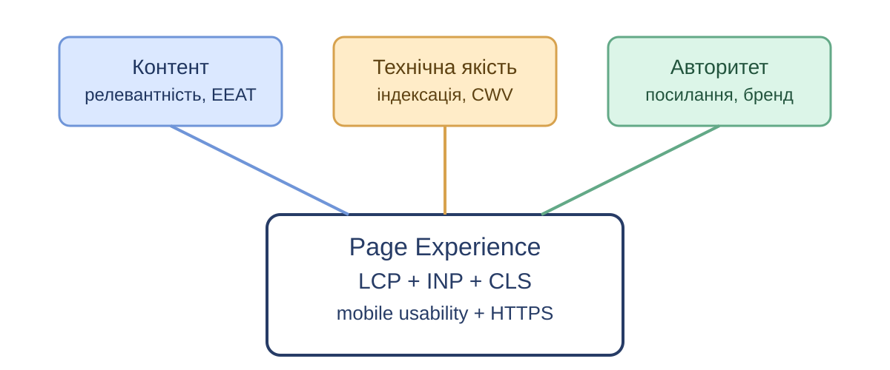
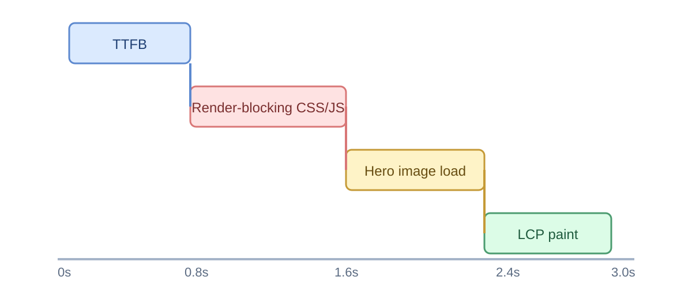
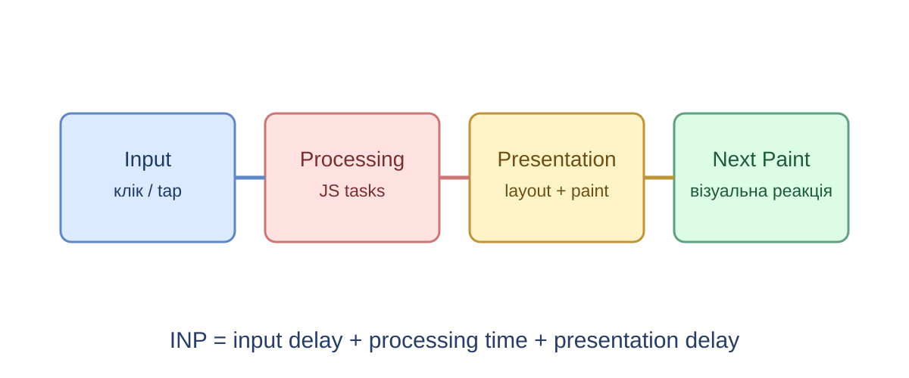
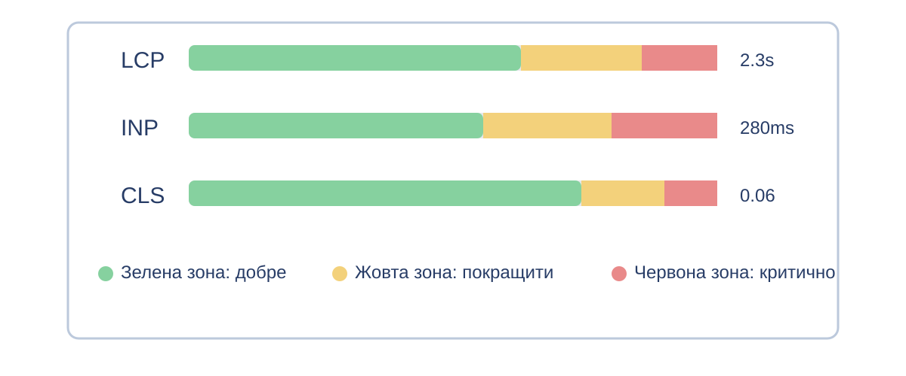
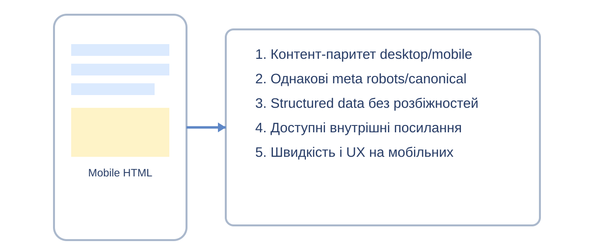
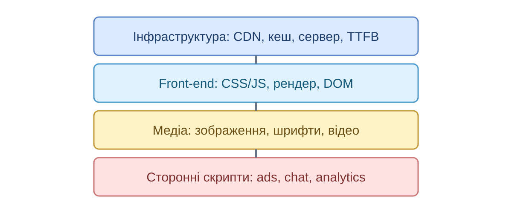
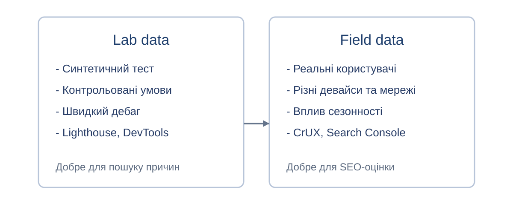
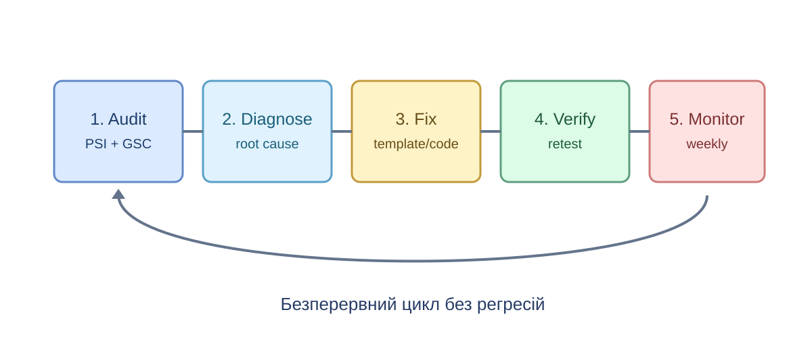
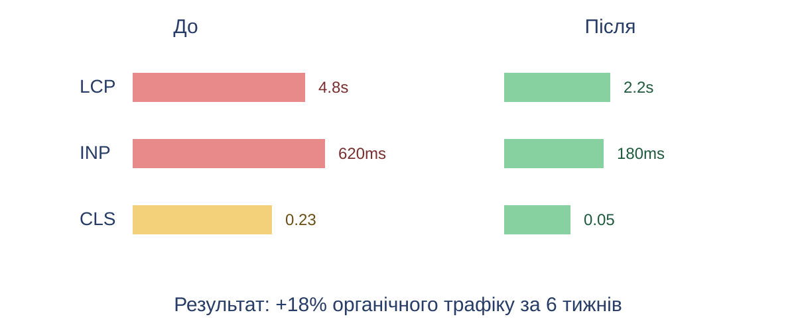
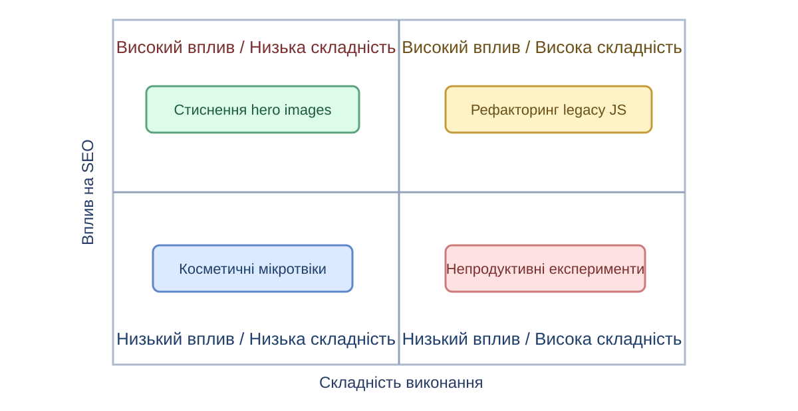

Лекція 7. Core Web Vitals та швидкість
План лекції:
- LCP, INP, CLS: що саме вимірюємо
- Mobile-first indexing
- Швидкість сайту як фактор ранжування
- Практичний підхід до оптимізації
Чому швидкість критична для SEO
- Швидкі сторінки дають кращий UX і вищу конверсію
- Core Web Vitals входять до системи оцінки якості сторінки
- Повільний сайт частіше втрачає мобільний трафік
- Затримки завантаження збільшують bounce rate
Місце швидкості серед сигналів ранжування

Core Web Vitals: три ключові метрики
- LCP (Largest Contentful Paint) - швидкість появи основного контенту
- INP (Interaction to Next Paint) - затримка реакції сторінки на взаємодію
- CLS (Cumulative Layout Shift) - стабільність макета під час завантаження
Ціль: у 75% реальних сесій сторінка має бути в "зеленій" зоні.
Порогові значення Core Web Vitals
| Метрика |
Добре |
Потрібно покращити |
Погано |
| LCP |
<= 2.5 с |
2.5 - 4.0 с |
> 4.0 с |
| INP |
<= 200 мс |
200 - 500 мс |
> 500 мс |
| CLS |
<= 0.10 |
0.10 - 0.25 |
> 0.25 |
LCP: що вимірює метрика
LCP показує час до відображення найбільшого видимого елемента у viewport.
- Це може бути hero-зображення, великий заголовок або банер
- Метрика не дорівнює "повному завантаженню" сторінки
- LCP чутливий до серверної відповіді, CSS, JS та зображень
Де втрачається LCP

Як покращувати LCP
- Оптимізувати TTFB: CDN, кешування, швидший бекенд
- Прибрати блокуючі ресурси з critical path
- Стискати і правильно формати зображень (WebP/AVIF)
- Прелоадити ключовий hero-ресурс
- Мінімізувати обсяг критичного CSS/JS
INP: чому інтерактивність тепер у фокусі
INP оцінює найгіршу (або близьку до найгіршої) затримку взаємодії користувача зі сторінкою.
- Враховуються кліки, натискання клавіш, тач-взаємодії
- Метрика замінила FID, бо краще описує реальний UX
- Високий INP зазвичай сигналізує про перевантаження main thread
INP: життєвий цикл взаємодії

Як покращувати INP
- Дробити long tasks на менші частини
- Відкладати не критичний JS, зменшувати bundle size
- Уникати важких синхронних обчислень в обробниках подій
- Використовувати web workers для важкої логіки
- Зменшувати складність рендерингу і DOM-операцій
CLS: стабільність інтерфейсу
CLS вимірює суму неочікуваних зсувів елементів під час життєвого циклу сторінки.
- Користувач натискає кнопку, але вона "стрибає" - це поганий UX
- Найчастіші причини: зображення без розмірів, динамічна реклама, пізнє підвантаження шрифтів
- Стабільний макет підвищує довіру і зменшує випадкові кліки
Як покращувати CLS
- Завжди задавати width/height для img, video, iframe
- Резервувати місце під банери, віджети, вставки реклами
- Не вставляти новий контент над уже видимим без взаємодії
- Оптимізувати шрифти: preload, font-display, підбір fallback
- Анімації робити через transform та opacity
Як читати CWV-звіт

Mobile-first indexing: суть підходу
Google індексує і оцінює сторінку насамперед за мобільною версією контенту.
- Якщо на мобільному менше контенту - це ризик втрати релевантності
- SEO-сигнали (meta, structured data, internal links) мають збігатися
- Швидкість на мобільних пристроях має пріоритет
Mobile-first: що перевіряти в першу чергу

Типові mobile-first помилки
- Прихований на мобільному ключовий контент
- Відсутні внутрішні лінки в mobile-меню
- Окремі mobile URL без коректної зв'язки
- Повільні сторінки на 3G/4G
- Важкі pop-up, що перекривають контент
- Некоректні viewport та tap targets
- Різні canonical/hreflang між версіями
- Розбіжність structured data
Звідки береться повільний сайт

Швидкі перемоги для SEO-команди
- Стиснути і lazy-load зображення нижче першого екрана
- Прибрати зайві сторонні скрипти (чати, трекери, віджети)
- Увімкнути кешування статичних ресурсів
- Мінімізувати CSS/JS і зменшити критичний шлях рендеру
- Перевірити мобільні шаблони на реальних пристроях
Інструменти для вимірювання швидкості
- PageSpeed Insights - лабораторні та польові метрики в одному звіті
- Lighthouse - детальний аудит продуктивності й рекомендації
- Chrome DevTools Performance - профілювання main thread
- Search Console (CWV) - моніторинг груп URL у продакшені
- CrUX Vis - аналіз польових даних за періодами
Лабораторні vs польові дані

Практичний workflow оптимізації

Міні-кейс: результати після оптимізації

Пріоритезація задач: вплив vs складність

План на 30 днів для Core Web Vitals
- Тиждень 1: аудит і baseline метрик (LCP, INP, CLS)
- Тиждень 2: правки шаблонів з найбільшим трафіком
- Тиждень 3: оптимізація JS та third-party скриптів
- Тиждень 4: повторні вимірювання, контроль регресій, backlog
Типові помилки під час оптимізації
- Оптимізація лише desktop, ігнорування mobile сценаріїв
- Покращення Lighthouse score без змін у польових даних
- Впровадження важких A/B або трекінг-скриптів без контролю
- Відсутність performance budget у CI/CD
- Разовий аудит без постійного моніторингу
Висновки лекції
- LCP, INP і CLS напряму відображають якість взаємодії користувача із сайтом
- Mobile-first indexing робить мобільну швидкість ключовим пріоритетом
- Оптимізація швидкості впливає і на ранжування, і на бізнес-метрики
- Результат дає лише системний процес: виміряти - виправити - перевірити